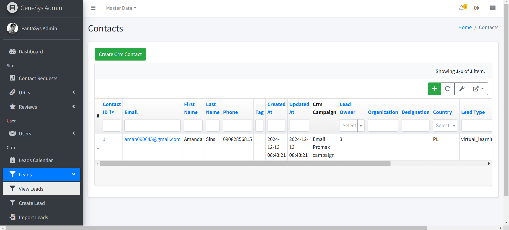
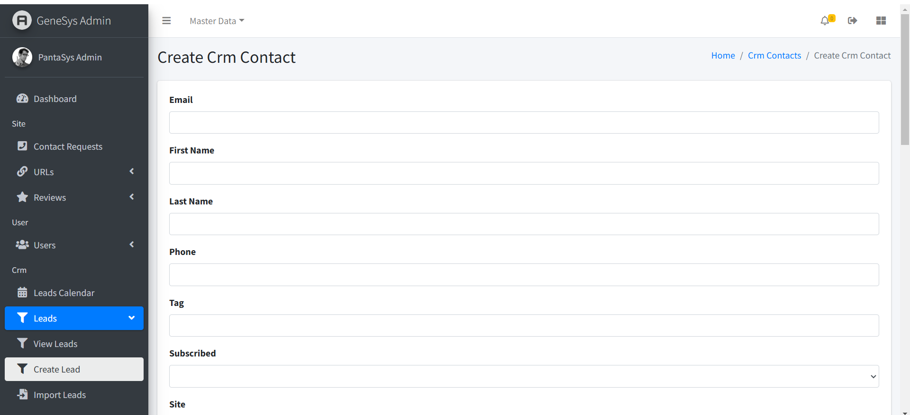
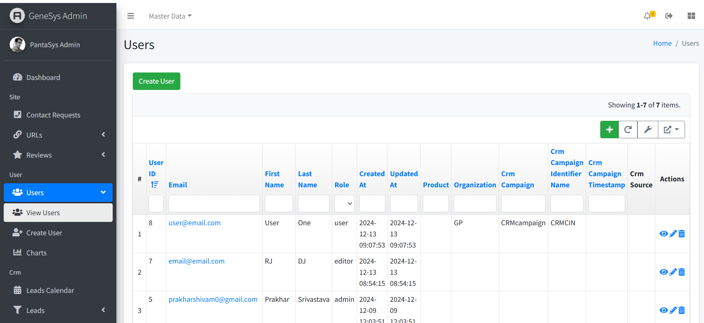
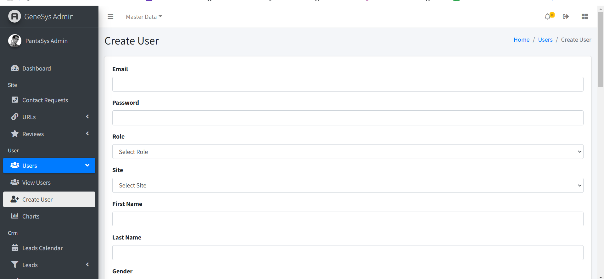
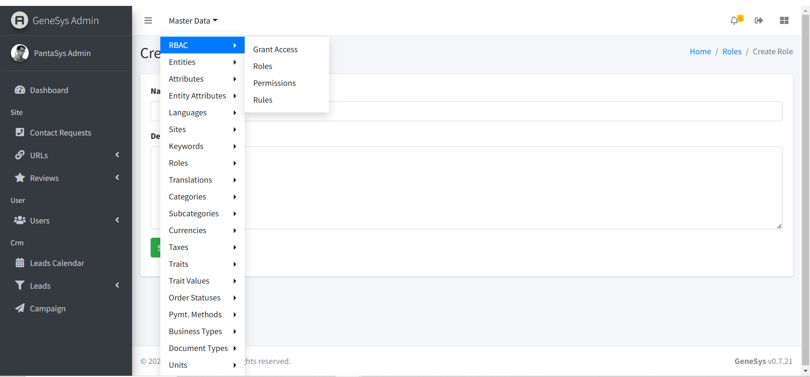

GeneSys Admin
Introduction
Welcome to the documentation for the GeneSys Admin web application. Use the menu below to navigate through the key features and functionalities.
Accessing GeneSys Admin
To access the GeneSys Admin web application, please follow these steps:
Login: Go to the GeneSys Admin website and log in with your credentials.
{kind=link}
Viewing Leads
{kind=link}
The View Leads page displays all saved leads in a table format. The table includes the following columns:
Lead Table Columns
{kind=link}
Contact ID: - A unique identifier assigned to each lead. - This column helps to differentiate between leads easily.
Email: - The email address of the lead. - This column allows users to view and verify contact information.
First Name: - The first name of the lead. - This field provides clarity on the lead’s identity.
Last Name: - The last name of the lead. - Together with the first name, it fully identifies the lead.
Phone Number: - The contact phone number of the lead. - This column is used for direct communication with the lead.
Tag: - A label or keyword associated with the lead. - Tags can help categorize or filter leads for better management.
Created At: - The date and time when the lead was created. - This field helps track when the lead was added.
Updated At: - The date and time when the lead was last updated. - Useful for identifying recent changes.
CRM Campaign: - A text column containing the name or type of CRM campaign associated with the lead. - This helps link leads to specific marketing campaigns.
Lead Owner: - A dropdown column allowing selection of the lead’s owner. - The dropdown is searchable for convenience.
Organization: - The organization the lead is associated with. - This provides context on the lead’s professional background.
Designation: - The professional title or role of the lead within their organization. - Helps understand the lead’s position in their company.
Country: - A searchable dropdown that provides a list of countries to select from. - Users can easily assign a country to the lead for regional tracking.
Lead Type: - A dropdown containing predefined lead types. - Examples include “Prospect,” “Customer,” or “Partner.”
Product: - The product or service associated with the lead. - This column helps link leads with specific offerings.
Lead Status: - A dropdown containing predefined statuses for the lead. - Examples include “New,” “In Progress,” “Closed.”
Source: - Indicates how the lead was acquired (e.g., “Website,” “Referral,” “Event”). - Helps track lead generation channels.
Follow-up Date: - A date and time column for scheduling follow-up actions. - Ensures timely communication with leads.
Action: - This column contains interactive icons for various actions:
View Icon: Opens a detailed view of the lead.
Delete Icon: Removes the lead from the system.
Update Icon: Opens the lead form for editing.
Managing Leads
Create a Lead
Navigate to the View Leads page.
Click the Create CRM Contact button.
Fill in the required fields and click Save.
View a Lead
Navigate to the View Leads page.
Leads are displayed in a table format with all relevant details.
Update a Lead
On the View Leads page, locate the lead you want to modify.
Click the Edit button in the Actions column.
Make the necessary changes and click Save.
Delete a Lead
On the View Leads page, locate the lead you want to delete.
Click the Delete button in the Actions column.
Confirm the deletion to remove the lead permanently.
Users
The “Users” module focuses on user account management, empowering administrators to control access, assign roles, and maintain user details. Refer to the Users section for detailed instructions on managing users.
Viewing Users
{kind=link}
The View Users page displays all saved users in a table format. The table includes the following columns:
User Table Columns
{kind=link}
User ID: - An auto-generated unique identifier assigned to each user. - This column helps to differentiate between users easily.
Email: - The email address of the user. - This column allows users to view and verify contact information.
First Name: - The first name of the user. - This field provides clarity on the user’s identity.
Last Name: - The last name of the user. - Together with the first name, it fully identifies the user.
Role: - The user’s role in the system (e.g., Admin, Manager, Staff). - Helps assign appropriate permissions and responsibilities.
Created At: - The date and time when the user account was created. - Useful for tracking new accounts.
Updated At: - The date and time when the user account was last updated. - Useful for identifying recent changes.
Product: - The product or service associated with the user. - Useful for linking users to specific offerings.
Organization: - The organization the user is associated with. - Provides context on the user’s professional background.
CRM Campaign: - A text column containing the name or type of CRM campaign linked to the user. - Helps connect users to specific campaigns.
CRM Campaign Identifier: - A unique identifier for the CRM campaign. - Enables precise tracking of campaign associations.
CRM Campaign Timestamp: - The date and time related to the CRM campaign activity. - Useful for campaign timeline tracking.
CRM Source: - Indicates the origin of the CRM campaign (e.g., “Website,” “Referral”). - Helps track campaign sources.
Action: - This column contains interactive icons for various actions:
View Icon: Opens a detailed view of the user.
Delete Icon: Removes the user from the system.
Update Icon: Opens the user form for editing.
Managing Users
Create a User
Navigate to the View Users page.
Click the Create User button.
Fill in the required fields and click Save.
View a User
Navigate to the View Users page.
Users are displayed in a table format with all relevant details.
Update a User
On the View Users page, locate the user you want to modify.
Click the Edit button in the Actions column.
Make the necessary changes and click Save.
Delete a User
On the View Users page, locate the user you want to delete.
Click the Delete button in the Actions column.
Confirm the deletion to remove the user permanently.
Master Data
Roles
The Roles feature under the Master Data section provides tools for managing user roles within the GeneSys Admin application. Roles help define user permissions and access levels, enabling administrators to assign responsibilities effectively.
Roles Management
The Roles menu contains the following options:
View Roles: Displays a list of all created roles in a table format.
Create Role: Allows administrators to add new roles to the system.
Viewing Roles
To view existing roles:
Navigate to the Master Data > Roles section.
Select View Roles from the dropdown menu.
{kind=link}
A table listing all stored roles will appear, displaying the following columns:
Role ID: A unique, auto-generated identifier for each role.
Name: The name of the role.
Description: A brief description of the role.
Created At: The date and time the role was created.
Updated At: The date and time the role was last updated.
Actions: Interactive icons to update, delete, or view detailed information about a role.
Creating a Role
To create a new role:
Navigate to the Master Data > Roles section.
Select Create Role from the dropdown menu.
Fill in the required fields: - Name: Enter a unique name for the role. - Description: Provide a brief description of the role.
Click Save to store the new role.
{kind=link}
Updating a Role
To update an existing role:
Navigate to the View Roles page.
Locate the role you want to modify.
Click the Edit icon in the Actions column.
Update the necessary fields and click Save.
Deleting a Role
To delete an existing role:
Navigate to the View Roles page.
Locate the role you want to delete.
Click the Delete icon in the Actions column.
Confirm the deletion to permanently remove the role.
Role-Based Access Control (RBAC)
The RBAC feature under Master Data includes:
{kind=link}
Grant Access: Assign roles and permissions to users.
Roles: Manage roles as described above.
Rules: Define custom rules for access control.
Permissions: Specify detailed permissions for each role.
The Roles feature in the GeneSys Admin application simplifies user management by providing a structured way to define and assign permissions. Use the intuitive interface to create, view, and modify roles effectively, enhancing security and operational efficiency.